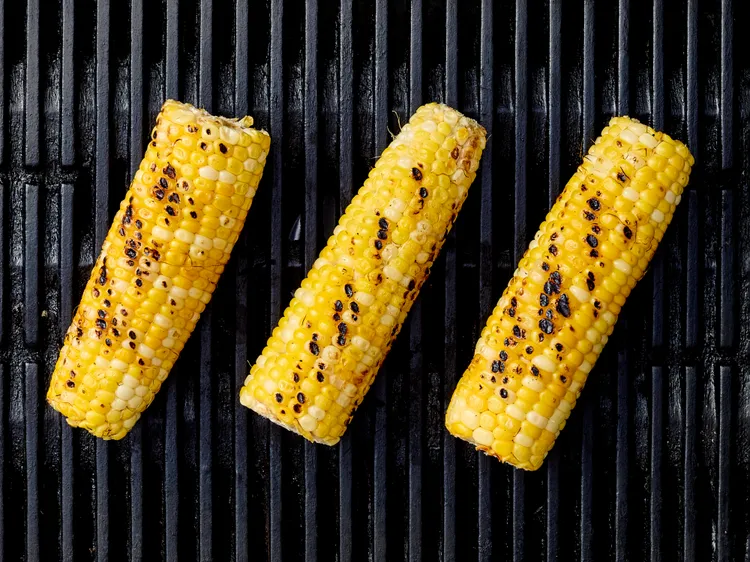

Ingredients
- 3 ears fresh sweet corn, husks removed
- 2 tablespoons extra virgin olive oil, plus more for grilling
- 1 large lime, zested and juiced
- 1 tablespoon honey
- 1 teaspoon bottled green hot pepper sauce, or more to taste
- 1/2 teaspoon salt
- 1/4 teaspoon freshly ground black pepper
- 2 cups cherry or grape tomatoes, halved
- 1 large avocado, diced
- 1/2 cup crumbled feta or cotija cheese
- 2 tablespoons chopped fresh cilantro
- 2 tablespoons chopped fresh basil
Directions
-
Gather all ingredients. Preheat an outdoor grill for medium heat (325 degrees to 375 degrees F or 165 to 190 degrees C). Lightly oil grate.
- Place corn on grill rack directly over heat. Cover and grill corn, turning occasionally, until the corn is tender and browned specks appear, 15 minutes; set aside until cool enough to handle.

-
Slice the kernels off of the cobs. You should have about 1 1/2 cups.
-
Meanwhile, whisk together olive oil, lime zest, lime juice, honey, hot sauce, salt, and pepper in a large bowl.
- Add corn kernels, tomatoes, avocado, cheese, cilantro, and basil. Toss until well combined.